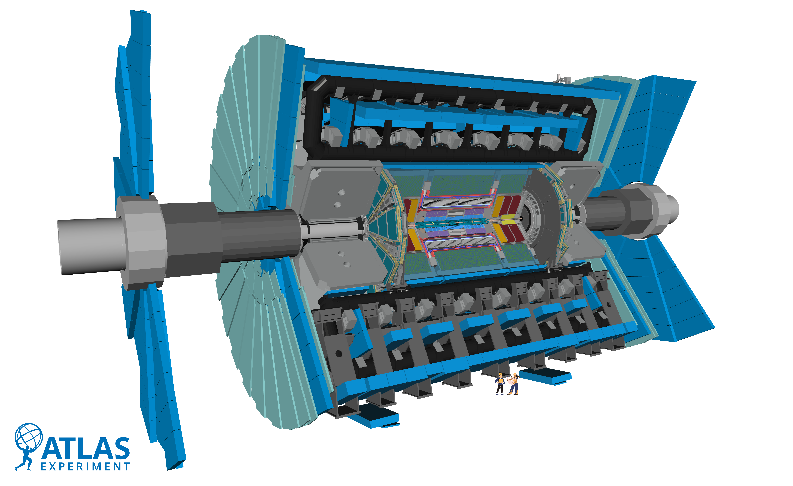

Detector Components

Select a subsystem above or in the illustration to see what it measures and why it matters.
What it measures:
Why it matters:
Enable JavaScript to explore individual components. The complete ATLAS cutaway remains visible above.